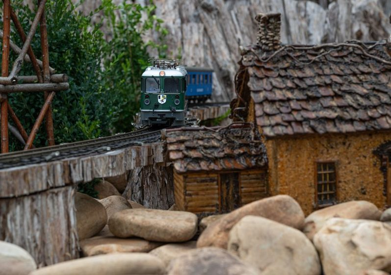

The Siding That Earns Its Space
A siding drawn in because a plan looked bare rarely gets used twice. One drawn in because something needs to happen there gets used every session.

There is a particular kind of siding you find on a lot of small home layouts: three feet of straight track tucked behind the run-around, connected at both ends, ballasted the same as everything else, and empty. Not empty because nothing has arrived yet — empty because nothing was ever asked to go there. It got drawn in because the baseboard had a gap between the yard lead and the backdrop, and a siding is what people draw in gaps. That siding will sit there for years looking correct and doing nothing, and the operator will walk past it every session without a reason to touch it.
Two different questions, two different sidings
"Where can I fit a siding" and "what needs a siding" are not the same question, and they produce different track. The first question is answered by the baseboard — its length, its curves, the leftover rectangle beside the aisle. The second is answered by the operation — the industry that needs a spot to sit while it's worked, the train that needs somewhere to wait for a meet, the car that needs to be set out and picked up on a different visit than the one that dropped it. A siding built from the first question fits the room. A siding built from the second question fits the job. Only the second kind gets switched.
What "earning its space" actually means
A siding earns its space when you can name, in one sentence, what happens there and why it can't happen somewhere else. "This is where the feed mill car sits while it's loading, because the mill only has one spot and the crew can't block the runaround while they wait." That's a reason. "This looked like a good place for a siding" is not a reason — it's a placeholder wearing the shape of a decision. The test isn't whether the siding looks plausible on the drawing. It's whether removing it would change how a session plays out.
The siding that gets switched every session is rarely the longest one on the plan — it's the one whose job you could explain to a stranger in a sentence.
This distinction matters more on a small layout than a large one, because small layouts can't afford dead weight. A club layout with forty feet of mainline can carry a decorative siding or two without anyone noticing — there's enough real work elsewhere to fill a session. A spare-room layout with three turnouts total can't. Every siding you don't use is a siding you paid for in bench space, in radius you didn't have to spend, in a turnout you could have put somewhere that pulls its weight.
Purposeful sidings versus decorative ones
The clearest way to sort a plan's sidings is to ask what would happen if the siding vanished tonight. If the honest answer is "nothing changes," it's decorative. If the answer involves cars piling up somewhere they shouldn't, or a train having nowhere to clear for a meet, it's purposeful. A few working patterns, from plans that get run repeatedly rather than just admired:
| Siding type | Job it does | Sign it's earning its keep |
|---|---|---|
| Industry spur | Holds a car while it loads, unloads, or waits for the next session's pickup | Cars sit there between sessions, not just during them |
| Runaround | Lets the engine get to the other end of its train to push or pull | Used on every session that switches the far end of the line |
| Passing siding | Holds one train clear so another can proceed on a single-track line | Shows up on the timetable as a scheduled meet, not just a possibility |
| Interchange track | Marks where cars change ownership between two operating sessions or two roads | Has its own waybill logic, separate from the industries it feeds |
| Storage/staging lead | Represents "off-layout" — the rest of the railroad you're not modeling | Trains enter it and don't come back the same session |
A quick gut check
Before you commit a siding to the baseboard, write its waybill first — literally, on paper. What car goes there, what does it carry, who picks it up and when. If you can't write that sentence, the siding doesn't exist yet as an operating idea; it's still just a shape. Build the sentence, then build the track under it, not the other way around.
Working backward from the operating session
The layouts where every siding pulls its weight tend to start design from the session, not the track plan. Someone sketches what a two-hour operating session should feel like — how many industries get switched, whether there's a meet to manage, whether a crew hands off cars to another crew — before a single curve is drawn. The track plan becomes the physical expression of that session, not the other way around. This is the same instinct behind a good working timetable: the schedule isn't decoration on top of the railroad, it's the reason the railroad has the shape it has.
Practically, that means listing operating moves before drawing sidings:
- Which cars need to be set out and which need to be picked up, and are those ever the same visit
- Where a train needs to clear the main, and for how long, and why
- Whether an industry needs more than one spot — loading and storage are different jobs even at the same building
- Where the operator's attention should be highest, and whether the track supports that or fights it
Each answer suggests a siding with a job already attached. None of them start from "there's room here."
The cost of a siding that doesn't earn its space
A decorative siding isn't neutral — it has a price even when it does nothing. It costs a turnout, which costs money and a maintenance point. It costs bench space that a working siding could have used, sometimes the difference between a spur that's a comfortable length and one that's cramped. And it costs attention: a new operator scanning the plan has to mentally file it as "not relevant," which is one more thing to filter out before the real operation becomes legible. A plan with three purposeful sidings reads faster than one with three purposeful sidings plus two decorative ones, even though the second has more track.
None of this means every inch of siding needs a waybill taped to it before ballast goes down. Plans evolve, and a siding built for one purpose sometimes finds a better one later — that's normal and healthy. The point is the starting question. Reaching for "what does this room have room for" first, instead of "what does this railroad need to do," is how a plan ends up with track that looks complete but plays half-empty.
Worth remembering
This piece describes a way of thinking about track planning, not a rule for any specific layout. Session length, crew size, and the industries you're modeling will all push the right answer in different directions — there's no siding count or spur length that's correct for every room.